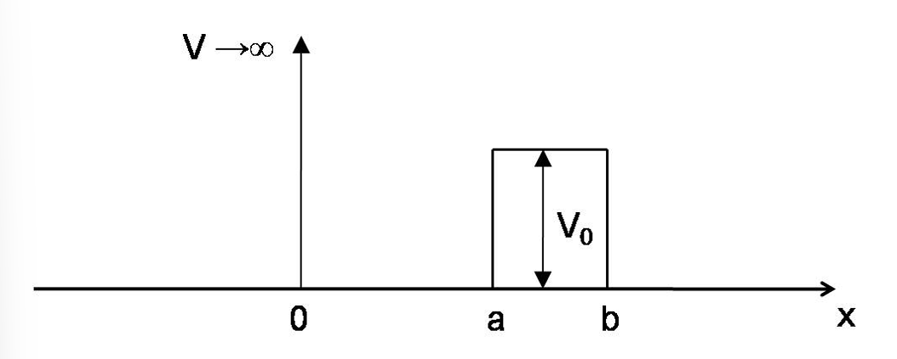

PHYS 481 - Quantum Mechanics
Assignment 04
Problem 1 - An expanding infinite square well
Consider a particle of mass \(m\) in an infinite square well, that extends from 0 to \(a\). Assume that the particle is in the ground state of the square well for \(t < 0\). At \(t = 0\) the size of the square well is suddenly expanded, so that it extends from 0 to \(2a\) leaving the wave function of the state undisturbed.
- Write down the wave function \(\Psi(x,t = 0)\) in the new larger well (Think carefully about the different regions in the new well).
- The wave function \(\Psi(x,t = 0)\) can be expanded as a linear combination of the stationary states, \(\chi_n(x)\), of the new larger well, i.e. \(\Psi(x,t = 0) = \sum_{n=1}^{\infty} c_n\chi_n(x)\). Determine a formula for \(c_n\) and show by summing the first terms that the sum over \(|c_n|^2\) is approaching 1. Does this make sense? Explain.
- Assume that the energy of the particle is measured at some time \(t > 0\). What is the expectation value \(\left<E\right>\) of the energy? What is the probability that the energy of the first excited state \((n = 2)\) of the new well is measured
- Calculate the smallest period of time, \(\tau > 0\), at which \(\Psi(x,\tau) = \Psi(x,t = 0)\).
Response: Since the wavefunction has not changed between \(t<0\) and \(t=0\), the wavefunction at \(t=0\) is identical to what is was for \(t<0\), except now the well has expanded so there is a region inside the box where there is no wavefunction.
\[\Psi(x,0) = \cases{\sqrt{\frac{2}{a}\sin\frac{\pi}{a}x} \quad x\in(0,a) \\ 0 \quad x\in(a,2a) \\ 0 \quad \text{else}}\]
Since \(\Psi(x,0)\) can be written as a linear combination of the stationary states, \(\chi_n(x)\), of the new larger well, we can write \(\Psi(x,0)\) as follows
\[\Psi(x,0) = \sum_{n=1}^{\infty}c_n\chi_n\]
where \[\chi_n = \sqrt{\frac{1}{a}}\sin\frac{n\pi}{2a}x, \quad x\in(0,2a)\]
and \[\begin{align}c_n &= \sqrt{\frac{2}{a}}\int\sin\frac{n\pi x}{a}\Psi(x,0)dx \\ &= \sqrt{\frac{1}{a}}\int_0^a\sin\frac{n\pi x}{a}\sqrt{\frac{2}{a}}\sin\frac{\pi x}{a}dx \\ &= \frac{4\sqrt{2}\sin\frac{n\pi}{2}}{4\pi-n^2\pi}\end{align}\]
Note that we get an issue when \(n=2\) with this solution, however, if we rewrite the integrand using the product to sum formula
\[\sin A\sin B = \frac{1}{2}\left(\cos(A-B) - \cos(A+B)\right)\]
Applied to our case \(n=2\), we get the following integral for \(c_2\)
\[c_2 = \int_0^a\frac{\sqrt{2}}{2a}\left(\cos\left(\frac{2\pi x}{2a} - \frac{\pi x}{a}\right) - \cos\left(\frac{2\pi x}{2a} + \frac{\pi x}{a}\right)\right)dx = \frac{1}{\sqrt{2}}\]
If we sum over the first 5 terms in the sequence \(|c_n|^2\) using our formula for \(c_n\) for all \(n\not=2\) and use \(\frac{1}{\sqrt{2}}\) for \(c_2\), then we get
\[\sum_{n=1}^{5}|c_n|^2 = 0.997296\]
If we assume that the energy is measured at some time \(t>0\), the expectation value is given by
\[\begin{align} \left<H\right> &= \sum_{n=1}^{\infty}|c_n|^2 E_n \\ &= \frac{4\hbar^2}{ma^2}\sum_{n=1}^{\infty}\frac{\sin^2\left(\frac{n\pi}{2}\right)n^2}{(4-n)^2} \end{align}\]
For \(c=2\) we cannot evaluate using this formula directly. Thankfully, we already found a solution for \(c_2\) directly, and since the probability that energy of a particle in the n-th state is equal to \(|c_n|^2\), we have a probability of 0.5 that the energy of first excited state (n=2) of the new well is measured.
For the final problem, we get \(\Psi(x,\tau) = \Psi(x,t = 0)\), explicity \[\sum_{n=1}^{\infty}c_n\chi_n = \sum_{n=1}^{\infty}c_n\chi_n e^{-iE_n\tau/\hbar},\] when \[e^{-iE_n\tau/\hbar} = 1 = e^{-i2\pi n}.\] This corresponds to \[\frac{E_n\tau}{\hbar} = 2\pi n\] and when \(n=1\), \[\frac{\pi^2\hbar^2\tau}{8ma^2\hbar} = 2\pi\] and \[\tau = \frac{16ma^2}{\pi\hbar}\]
Problem 2 - Scattering by a potential well
Consider the case of a particle beam which comes in from the left with \(E > 0\) and scatters of the potential
\[V(x) = \cases{0, & x<0 \\ -V_0, & 0<x<a \\ 0, & a<x}\]
with \(V_0>0\) (note the minus sign in front of $V_0 in the formula).
- Write down the wave function in each region and give the wave numbers in your general solutions as functions of \(E\) and \(V_0\).
- Write down the appropriate boundary conditions using the wave functions you have determined and justify any terms in your general solutions you set to zero.
- The transmission coefficient for particles coming from the left to be transmitted to \(x\to\infty\) is given by \[T^{-1} = 1 + \frac{1}{4(E/V_0)(1+E/V_0)}\sin^2\left(\frac{a}{\hbar}\sqrt{2m(V_0 + E)}\right)\] Determine \(T\) for the limiting cases \(E\to 0\) and \(E\to\infty\).
- Consider the case where \(E=V_0\). Determine \(T\) at three different values of the parameters: \(V_0\to0\), \(a^2mV_0/\hbar^2 = \pi^2/16\), \(a^2mV_0/\hbar^2 = \pi^2/4\). How does this compare to your classical expectation?
Response: For part a), we can label our regions as \(I\), \(II\), and \(III\) corresponding to \(x<0\), \(0<x<a\), and \(x>a\). Regions \(I\) and \(III\) are both free particles, so they have the general solutions of
\[\begin{align}\psi_I &= Ae^{ikx} + Be^{-ikx} \\ \psi_{II} &= Fe^{ikx} + Ge^{-ikx} \\ k&=\sqrt{2mE}/\hbar\end{align}\]
Solving for the TISE in region \(II\)
\[\begin{align} -\frac{\hbar}{2m}\frac{d\psi}{dx} - V_0\psi &= E \\ \frac{d\psi}{dx} &= -\frac{2m(E+V_0)}{\hbar^2}\psi \\ \frac{d\psi}{dx} &= -l^2\psi, \quad l= \frac{\sqrt{2m(E+V_0)}}{\hbar}\end{align}\]
gives the following solution
\[\psi_{II} = C\cos lx + D\sin lx\]
Setting up our boundary conditions in part b), we have no infinite potentials, so we get two boundary conditions from each boundary. Additionally, we have the physical condition that there are no particles coming in from the right. The corresponding five boundary conditions are the following:
\[\begin{align} (\text{no particles incident from right}) &\longrightarrow G = 0\\ \psi_I\big|_{x=0} = \psi_{II}\big|_{x=0} &\longrightarrow A + B = C \\ \psi_{II}\big|_{x=a} = \psi_{III}\big|_{x=a} &\longrightarrow C\cos la + D\sin la = F\cos ka + iF\sin ka \\ \psi_I'\big|_{x=0} = \psi_{II}'\big|_{x=0} &\longrightarrow ik(A-B) = lD \\ \psi_{II}'\big|_{x=a} = \psi_{III}'\big|_{x=a} &\longrightarrow -lC\sin la + lD\cos la = ikFe^{ika}\end{align}\]
For part c), using the equation for the transmission coefficient provided, we can see that in the case when \(E\to 0\), the denominator of the second term goes to zero, meaning \(T^{-1}\) goes like \(1 + \infty \approx \infty\), so \(T\) goes zero. This matches our intuition that a particle with no energy should not be able to get through a barrier. Similarly, when \(E\to\infty\), the denominator of the second term blows up and the second term drops away, leaving a transmission coefficient of \(T=1\). This also matches our intuition that a particle with infinite energy should be able break through any barrier in its way.
For part d), when \(E=V_0\), we get the slightly simplified equation for the transmission coefficient
\[T^{-1} = 1 + \frac{1}{8}\sin^2\left(\frac{2a}{\hbar}\sqrt{mV_0}\right)\]
When \(V_0\to0\), we get \[T^{-1}=1 + \frac{1}{8}\sin^2(0) = 1\] which corresponds to a transmission coefficient of \(T=1\). This makes sense classically as when we reduce any potentials to zero, then the particle is free to move wherever it likes.
When \[a^2mV_0/\hbar^2 = \pi^2/16,\] we can make the following relation that \[\frac{a}{\hbar}\sqrt{2mV_0} = \frac{\pi}{4}.\] This corresponds to an inverse transmission coefficient of \[T^{-1} = 1 + \frac{1}{8}\sin^2\left(\frac{\pi}{2}\right) = 1 + \frac{1}{8} = \frac{9}{8}\] or a transmission coefficent of \[T = \frac{8}{9}\]
When \[a^2mV_0/\hbar^2 = \pi^2/4,\] we can make the following relation that \[\frac{a}{\hbar}\sqrt{2mV_0} = \frac{\pi}{2}.\] This corresponds to an inverse transmission coefficient of \[T^{-1} = 1 + \frac{1}{8}\sin^2(\pi) = 1 + 0 = 1\] or a transmission coefficent of \[T = 1\].
Problem 3 - Scattering by a potential barrier
Consider now a potential with a barrier of height \(V_0\)
\[V(x) = \cases{0, & x<0 \\ V_0, & 0<x<a \\ 0, & a<x}\]
- Adapt the results from the previous problem to demonstrate that for \(0<E<V_0\) the transmission coefficient is given by \[T^{-1} = 1 + \frac{1}{4(E/V_0)(1-E/V_0)}\sinh^2\left(\frac{a}{\hbar}\sqrt{2m(V_0 - E)}\right)\] To do this, turn the barrier downside up by replacing \(V_0\) with \(−V_0\) in that formula, and obtain an expression for \(T^{−1}\) where everything is real. It may help to know that \(\sinh(ix) = i\sin x\).
- Consider this system as a model of a baseball being thrown at a wall. A baseball has a mass of about 150 g, and we take it to be thrown at 40 m/s (near 90 mph). Assume that the wall is 0.1 m thick, and let’s make the approximation that the ball would have to be 5 times as energetic to punch through the wall classically, so \(V_0 = 5E\) with \(E\) determined by the quantities above. What is the order of magnitude for \(T\)? Let’s put this into perspective: if you keep trying, tossing a baseball at the wall once per second, roughly how long do you have to wait until it ”pops through” the wall quantum mechanically? Give your answer in seconds, and also in ages of the Universe (current models show the Universe to be about 13.7 billion years old), and comment on your results
Response: Starting with the transmission coefficient given in the previous problem
\[T^{-1} = 1 + \frac{1}{4(E/V_0)(1+E/V_0)}\sin^2\left(\frac{a}{\hbar}\sqrt{2m(V_0 + E)}\right)\]
if we set \(V_0 = -V_0\), we get the following (note that \(E<V_0\))
\[T^{-1} = 1 + \frac{1}{-4(E/V_0)(1-E/V_0)}\sin^2\left(i\frac{a}{\hbar}\sqrt{2m(V_0 - E)}\right)\]
If we recognize \(\sinh(ix) = i\sin(x)\), or, more usefully, \(\sinh^2(ix) = -sin^2(x)\) (and the \(sinh^2(x)\) is even), we get the following result
\[T^{-1} = 1 + \frac{1}{4(E/V_0)(1-E/V_0)}\sinh^2\left(\frac{a}{\hbar}\sqrt{2m(V_0 - E)}\right)\]
Now exploring the baseball question, if we consider all of the energy to be kinetic \(\left(E = \frac{1}{2}mv^2\right)\), \(m=0.15\) kg, \(v=40\) m/s, \(a=0.1\) m, and \(V_0 = 5E\), the terms inside the argument of \(\sinh^2\) evaluates to \(1.1379\cdot10^{34}\) and coefficient of \(\sinh^2\) becomes \(\frac{5^2}{4^2}\). If we approximate \(\sinh(x)\) as \(\frac{e^x}{2}\), then \(\sinh^2(x) \approx \frac{e^2x}{4}\) making our equation \[T^{-1} \approx 1 + \frac{25}{64}e^{2.2758\cdot10^{34}}\]
This implies \[T\approx \frac{64}{64 + 25 e^{2.2758\cdot10^{34}}}.\] Note that 64 and 25 are insignificant in comparison to the exponential term, so the overall transmission goes like
\[T\approx e^{-2.2758\cdot10^{34}}\]
To put this into perspective, if we were to toss our baseball at the wall once every second, we would expect to find it on the other side of the wall after \(\approx e^{-2.2758\cdot10^{34}}\) seconds or
\[\frac{t_{thru}}{t_{universe}} = \frac{e^{-2.2758\cdot10^{34}}\text{ s}}{4.320\cdot10^{17} \text{ s}} \xrightarrow{\ln} \frac{2.2758\cdot10^{34}}{\ln 4.320\cdot10^{17}} = 5.604\cdot10^{32}\xrightarrow{\exp} e^{5.604\cdot10^{32}}\text{ ages of the universe}\]
Problem 4 - Combinations of two potentials
Write down the form of the wave function in each region that represents the following physical system, give the wave numbers in your general soluton as functions of \(E\) and \(V_0\), and justify any terms you set to zero assuming a particle with \(0<E<V_0\) is incident from the right. Write down the appropriate boundary conditions using the wave functions you have determined. You do not have to solve for the parameters.

Response: We have four regions in this system; \(b\) to \(\infty\), \(a\) to \(b\), 0 to \(a\), and \(-\infty\) to 0; which we will label as \(I\), \(II\), \(III\), and \(IV\), respectively.
In \(I\), we have a free particle, thus, the solution to the TISE takes the form \[\psi_I = Ae^{ikx} + Be^{-ikx}, \quad k = \sqrt{2mE}/\hbar\]. We have a similar solution for regions \(III\) and \(IV\), which are also free particles. \[\begin{align}\psi_{III} &= Fe^{ikx} + Ge^{-ikx} \\ \psi_{IV} &= He^{ikx} + Je^{-ikx} \end{align}\]
In \(II\), we have scattering by a potential barrier. Applying our TISE for this region,
\[\begin{align} -\frac{\hbar}{2m}\frac{d\psi}{dx} + V_0\psi &= E \\ \frac{d\psi}{dx} &= \frac{2m(V_0-E)}{\hbar^2}\psi \\ \frac{d\psi}{dx} &= l^2\psi, \quad l= \frac{\sqrt{2m(V_0 - E)}}{\hbar}\end{align}\]
which has a solution
\[\psi_{II} = Ce^{lx} + De^{-lx}, \quad l= \frac{\sqrt{2m(V_0 - E)}}{\hbar}\]
Putting our solutions together, we get the following forms in each region for our wavefunctions.
\[\begin{align}\psi_I &= Ae^{ikx} + Be^{-ikx} \\ \psi_{II} &= Ce^{lx} + De^{-lx} \\ \psi_{III} &= Fe^{ikx} + Ge^{-ikx} \\ \psi_{IV} &= He^{ikx} + Je^{-ikx} \\ \\ k &= \sqrt{2mE}/\hbar \\ l&= \frac{\sqrt{2m(V_0 - E)}}{\hbar}\end{align}\]
Applying our boundary conditions, we can say generally that \(\psi\) is continuous and \(d\psi/dx\) is continuous except in infinite potentials.
Applying these general statments to our system, we can derive our boundary conditions.
We get two boundary conditions between \(I\) and \(II\). Specifically:
\[\begin{align} Ae^{ikb} + Be^{-ikb} &= Ce^{lb} + De^{-lb} \\ ikAe^{ikb} - ikBe^{-ikb} &= lCe^{lb} - lDe^{-lb}\end{align}\]
Similarly for regions \(II\) and \(III\):
\[\begin{align} Ce^{la} + De^{-la} &= Fe^{ika} + Ge^{-ika}\\ lCe^{la} - lDe^{-la} &= ikFe^{ika} - ikGe^{-ika}\end{align}\]
For regions \(III\) and \(IV\), we have an infinite potential, so the spatial derivative of \(\psi\) is not continuous at \(x=0\), but we gain the physical constraint that there are no incident particles from the left, resulting in the following boundary conditions.
\[\begin{align}H &= 0 \\ F + G &= J\end{align}\]
Problem 5 - Step potential
Consider the “step” potential:
\[V(x) = \cases{0 \hspace{1cm} x \leq 0 \\ V_0 \hspace{1cm} x > 0}\]
- Calculate the reflection coefficient, for the case \(E < V_0\) , and comment on the answer.
- Calculate the reflection coefficient for the case \(E > V_0\).
- For a potential (such as this one) that does not go back to zero to the right of the barrier, the transmission coefficient is not simply \(|F|^2/|A|^2\) (with \(A\) the incident amplitude and \(F\) the transmitted amplitude), because the transmitted wave travels at a different speed. Show that \[T = \sqrt{\frac{E-V_0}{E}}\frac{|F|^2}{|A|^2}\] for \(E>V_0\)
- For \(E >V_0\), calculate the transmission coefficient for the step potential and check that \[R+T = 1\]
Response: For the case \(E < V_0\), we have two regions (\(I:x\leq0\), and \(II:x>0\)). Region \(I\) is a free particle so it has the general solution \[\psi_{I} = Ae^{ikx} + Be^{-ikx}, \quad k = \sqrt{2mE}/\hbar.\]
The TISE in region \(II\) gives the differential equation
\[\frac{d^2\psi}{dx^2} = l^2\psi, \quad l = \sqrt{2m(V_0-E)}/\hbar\]
which has a general solution of
\[\psi_{II} = De^{lx} + Ce^{-lx}, \quad l = \sqrt{2m(V_0-E)}/\hbar\]
Looking at boundary conditions, none of the potentials are infinite, so we have two boundary conditions and a physical condition that \(D=0\) as the first exponential in \(\psi_{II}\) blows up as \(x\to\infty\). Thus, the boundary conditions become:
\[\begin{align}\psi_{I}\big|_{x=0} &= \psi_{I}\big|_{x=0} \\ A + B &= C \\ \\ \psi_{I}'\big|_{x=0} &= \psi_{I}'\big|_{x=0} \\ ik(A-B) &= -lC\end{align} \]
As \(R = \frac{|B|^2}{|A^2|}\), we can take our two boundary conditions and solve for \(B/A\).
\[\begin{align}ik(A-B) &= - l(A+B) \\ ikA - ikB &= -lA -lB \\ (ik+l)A &= (-ik-l)B \\ \frac{B}{A} &= \frac{ik+l}{-ik-l} \end{align}\]
Then square our result to get \(R\)
\[\begin{align} R &= \frac{|B|^2}{|A|^2} \\ &= \frac{(ik+l)(-ik+l)}{(-ik-l)(ik-l)} \\ &= \frac{k^2 + l^2}{l^2 + k^2} \\ &= 1\end{align}\]
So in the case that our energy is less than the potential, an incident particle is 100% reflected in a step potential.
Looking at the other case, when \(E>V_0\), we get the same solution in region \(I\),
\[\psi_{I} = Ae^{ikx} + Be^{-ikx}, \quad k = \sqrt{2mE}/\hbar\]
but region \(II\) is now described by the slightly modified differential equation
\[\frac{d^2\psi}{dx^2} = -l^2\psi, \quad l = \sqrt{2m(E-V_0)}/\hbar\]
which has general solution of \[\psi_{II} = Ce^{ilx} + De^{-ilx}\].
Looking at physical conditions, we can see that \(D\) must be zero since we have no particles incident from the right. The resulting boundary conditions are
\[\psi_{I}\big|_{x=0} = \psi_{II}\big|_{x=0} \longrightarrow A + B = C\]
and
\[\psi_{I}'\big|_{x=0} = \psi_{II}'\big|_{x=0} \longrightarrow k(A-B) = lC\]
Solving this system of equations for \(B/A\) gives
\[\frac{B}{A} = \frac{k-l}{l+k}\]
Solving for \(R\) gives
\[\begin{align}R &= \frac{|B|^2}{|A|^2} \\ &= \frac{(k-l)^2}{(l+k)^2} \\ &= \frac{(k-l)^2}{(l+k)^2} \cdot\frac{(k-l)^2}{(k-l)^2} \\ &= \frac{(k-l)^4}{(k^2-l^2)^2}\end{align}\]
Here we will note that
\[k-l = \frac{\sqrt{2}m}{\hbar}(\sqrt{E}-\sqrt{E-V_0})\]
and
\[k^2 - l^2 = \frac{2m}{\hbar}V_0\]
Returning to our solution for \(R\)
\[\begin{align}R &= \frac{(k-l)^4}{(k^2-l^2)^2} \\ &= \frac{\left(\frac{\sqrt{2}m}{\hbar}(\sqrt{E}-\sqrt{E-V_0})\right)^4}{\left(\frac{2m}{\hbar^2}\right)^2V_0^2} \\ &= \frac{(\sqrt{E} - \sqrt{E-V_0})^4}{V_0^2}\end{align}\]
Moving on to part c) now, if the potential does not go back to zero to the right of the barrier, then the waves in the two regions are going to be traveling at different speeds, so we need to derive a new relation for the transmitted wave.
Remembering our probability current \(J\), that describes the rate at which probability is flowing past a point, we can see that the transmission coefficient should be proportional to the transmitted probability current by the incident probability current.
\[T = \frac{J_{transmitted}}{J_{incident}}\]
Now we just need a relationship for the probability current for a free particle, since that is what describes our system. Thankfully, Problem 2.18 is exactly this problem.
If we start with our definition of \(J\)
\[J = \frac{i\hbar}{2m}\left(\Psi\frac{\partial\Psi^*}{\partial x} - \Psi^*\frac{\partial\Psi}{\partial x}\right)\]
and assume a free particle, then we have a wavefunction like
\[\Psi_k(x,t) = Ae^{i\left(kx-\frac{\hbar k^2}{2m}t\right)}\]
where
\[k = \pm \frac{\sqrt{2mE}}{\hbar},\quad k>0\implies \text{ right moving}, \quad k<0\implies \text{ left moving}\]
When we substitute our wavefunction into our defintion of \(J\), we get
\[\begin{align} J &= \frac{i\hbar}{2m}\left(\Psi\frac{\partial\Psi^*}{\partial x} - \Psi^*\frac{\partial\Psi}{\partial x}\right) \\ &= \frac{i\hbar}{2m}\left(\Psi(-ik|A^2|)\Psi^* - \Psi^*(ik|A|^2)\Psi\right) \\ &= \frac{i\hbar}{2m}\left(-2ik|A^2|\right) \\ &= \frac{\hbar k}{m}|A^2|\end{align}\]
and if \(k>0\implies J>0\implies \text{ probability flows right}\) and if \(k<0\implies J<0\implies \text{ probability flows left}\).
Using this solution, we can derive our equation for the transmittion coefficient of our original system.
\[\begin{align}T &= \frac{J_{transmitted}}{J_{incident}} \\ &= \frac{\frac{\hbar l}{m}|C|^2}{\frac{\hbar k}{m}|A|^2} \\ &= \frac{l}{k}\frac{|C|^2}{|A|^2} \\ &=\frac{\frac{\sqrt{2m(E-V_0)}}{\hbar}}{\frac{\sqrt{2mE}}{\hbar}}\frac{|C|^2}{|A|^2} \\ &= \sqrt{\frac{E-V_0}{E}}\frac{|C|^2}{|A|^2}\end{align}\]
Verifying \(R + T = 1\), we first need to determine \(C/A\)
\[\begin{align}k(A-B) &= lC \\ k(2A - C) &= lC \\ 2kA &= C(l + k) \\ \frac{C}{A} &= \frac{2k}{l+k}\end{align}\]
Thus,
\[\begin{align}R + T &= \frac{(k-l)^2}{(l+k)^2} + \frac{l}{k}\left(\frac{2k}{l+k}\right)^2 \\ &= \frac{(k-l)^2 + 4kl}{(l+k)^2} \\ &= \frac{k^2 - 2kl + l^2 +4kl}{(l+k)^2} \\ &= \frac{k^2 + 2kl + l^2}{(l+k)^2} \\ &= \frac{(l+k)^2}{(l+k)^2} \\ &= 1\end{align}\]